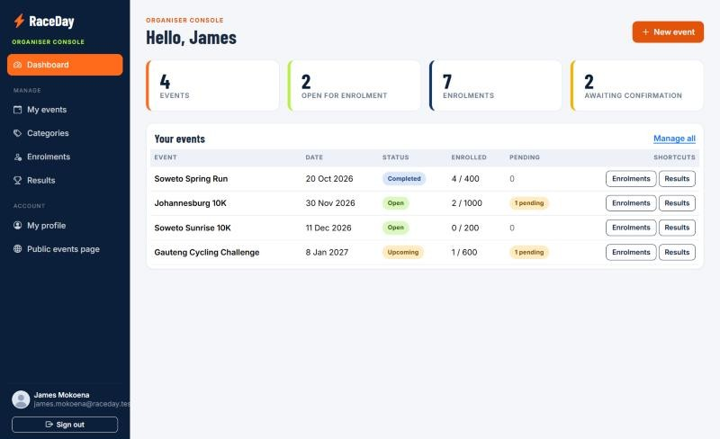
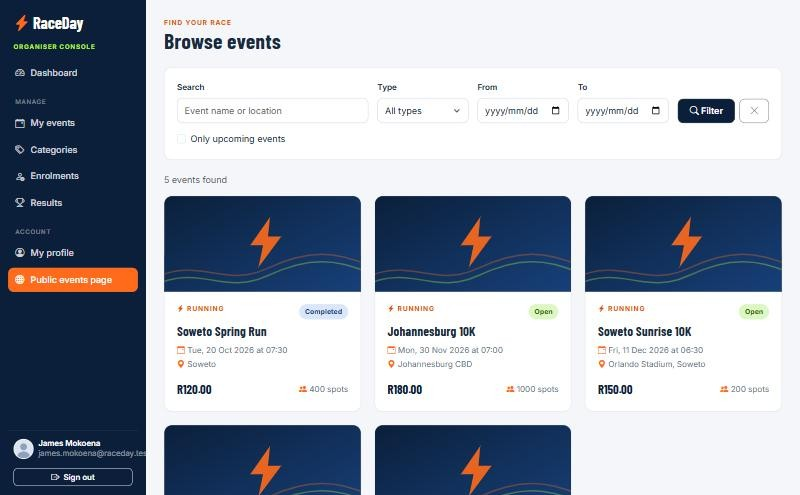

RaceDay
A sports event management platform. Organisers publish running, walking and cycling events; participants browse them, enrol and follow their results.



About the project
RaceDay has two kinds of users. Organisers get a dashboard to create events, manage categories, review enrolments and record results. Participants browse and search events, enrol in a category, and see their own results, such as 47th out of 312 finishers.
The solution is split into an ASP.NET Core Web API, which owns the database and the business rules, and an MVC web app that only talks to that API. Images such as profile pictures and event banners go through the API to Azure Blob Storage. The whole stack, including SQL Server and a local Azure emulator, starts with one docker compose command.
What I built
- REST API with JWT sign-in and role-based access for organisers and participants
- MVC web app with a sidebar console for organisers and a top navigation for participants
- Events, categories, enrolments (pending, confirmed, cancelled) and results
- Image uploads to Azure Blob Storage, checked for type and size by the API
- Organiser sign-up protected by a secret access code checked on the server
- Unit and integration tests with xUnit, run by GitHub Actions on every push
- Docker Compose setup with SQL Server, Azurite, the API and the web app